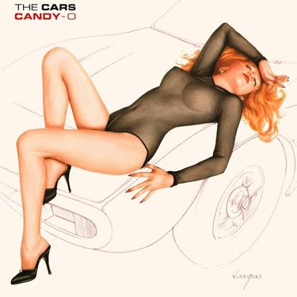

| The Cars,The Best Album in my opinion, released 1978 |
1. Good Times Roll, 2. My Best Friend's Girl, 3. Just What I Needed, 4. I'm in Touch with Your World 5. Don't Cha Stop, 6. You're All I've Got Tonight, 7. Bye Bye Love
8. Moving in Stereo, 9. All Mixed Up Lyrics |
 |
| Candy-OThis album is the second studio album and was released on June
2nd, 1979. The album cover was a very risque |
1. Let's Go, 2. Since I Held You, 3. It's All I Can D0, 4. Double Life, 5. Shoo Be Doo, 6. Candy-O, 7. Night Spots, 8. You Can't Hold On Too Long, 9. Lust for Kicks, 10. Got a Lot on My Head, 11. Dangerous Type |
 |
| PanoramaPanorama comes in at #3. After one month in the recording studio
April-May, the album released August 5th, 1980 |
1. Panorama, 2. Touch and Go, 3. Gimme Some Slack, 4. Don't Tell Me No, 5. Getting Through, 6. Misfit Kid, 7. Down Boys, 8. You Wear Those Eyes,
9. Running to You, 10. Up and Down, BONUS TRACKS-
The Edge, Shooting for You |
 |
| Shake It UpReleased on November 6, 1981, Shake It Up became the 4th album
|
1. Since You're Gone,
2. Shake It Up,
3. I'm Not The One,
4. Victim Of Love
Cruiser,
5. A Dream Away,
6. This Could Be Love,
7. Think It Over,
8. Maybe Baby |
 |
| Heartbeat City Considered a "comeback" album for the Cars, Heartbeat City
represented a return to the success, Released on March 13, 1984 |
1. Hello Again, 2. Looking for Love, 3. Magic, 4. Drive, 5. Stranger Eyes, 6.You Might Think, 7. It’s Not the Night, 8. Why Can't I Have You, 9. I Refuse
10. Heartbeat City |
 |